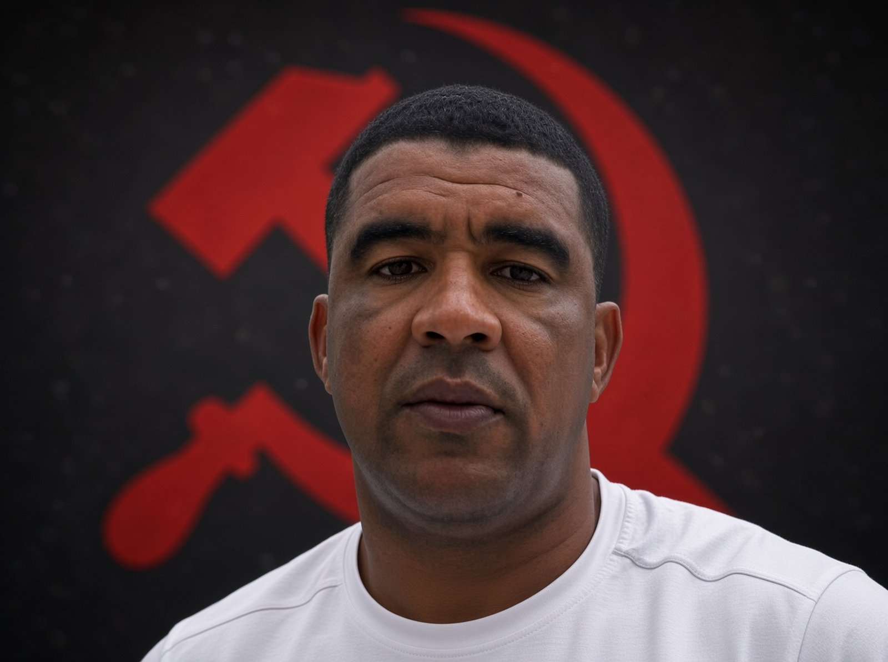

Expediente REP-003 · Acusación

- NOMBRE:
- Lester Aróstica Cermeño
- CARGO:
- Delegado del MININT en Cabaiguán
- INSTITUCIÓN:
- MININT
- CENTRO:
- Delegación municipal del MININT en Cabaiguán
- ZONA:
- Cabaiguán, Sancti Spíritus
- HECHO:
- 27 de junio de 2026
Lester Aróstica Cermeño, delegado del Ministerio del Interior en Cabaiguán, Sancti Spíritus, es acusado de encabezar la represión contra una peregrinación evangélica que recorrió las calles de la ciudad el sábado 27 de junio de 2026 bajo el lema “Cuba Libre para Cristo”.
La Alianza de Cristianos de Cuba denunció acoso, intimidación y violación de la libertad religiosa contra el pastor Alian López Rodríguez, líder de la Congregación Tabernáculo de La Promesa, del Ministerio Internacional Viento Recio. La marcha llevaba banderas blancas, como símbolo de paz, y la bandera cubana. Iban en oración por la ciudad. López Rodríguez iba al frente, con una bocina: “La iglesia de Cuba está despierta. No nos quedamos callados, no nos escondemos.”
El pastor fue detenido y llevado a una sala techada. Varios líderes de la congregación pidieron que, si se lo llevaban a él, los arrestaran también. Las autoridades respondieron que la orden era solo contra él. Lo soltaron esa misma tarde. Después dijo que lo interrogaron, lo amenazaron y le exigieron publicar en Facebook que se retractaba. Dijo que no tenía de qué retractarse, y que él y sus feligreses siguen bajo persecución y vigilancia.
La Alianza señaló que no era la primera vez. El pastor ya había recibido amenazas, hostigamiento, decomisos, registros y órdenes de demolición contra su iglesia. En diciembre de 2025, Caridad Diego Bello, jefa de la Oficina de Atención a los Asuntos Religiosos del PCC, recorrió el país pidiendo “neutralidad” a líderes cristianos y que no se involucraran en política ni se solidarizaran con víctimas de la represión. El pastor exiliado Enrique de Jesús Fundora dijo a Diario de Cuba que varios fueron amenazados con no salir del país o con quitar visas religiosas a misioneros.
Esto es la acusación del expediente, no una sentencia. Fuente: Alianza de Cristianos de Cuba y Diario de Cuba.